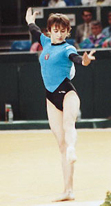

Elena Grudneva (USSR/RUS)
1992 Olympic Team Gold Medalist

Medal Total
Olympic Games: 1
Gold
European Championships: 1 Bronze
Elena was born on February 21, 1974, in Kemerovo. She was selected from her kindergarten class to join a gymnastics group, and was coached by Mikhail Barabakh at Profsoyuz in Kemerovo. After retiring from competitive sport, she married and had 2 children. She works as a coach at the gym in Kemerovo where she used to train.
Competition Results
1989
Catania Cup: 4th AA
USSR Cup: 16th AA
1990
Medico Cup: 2nd AA, 1st B
1991
European Cup: 2nd AA, 2nd UB, 2nd B, 2nd FX, 3rd V
ITA-USSR Dual Meet: 1st Team, 6th AA
Moscow News International: 3rd AA
Rome Grand Prix: 1st AA
USSR Spartakiade: 2nd Team, 5th AA, 4th B, 6th UB
1992
CIS Championships: 6th UB, 7th B, 8th FX
CIS Cup: 1st Team, 6th AA
Cottbus International: 9th AA, 5th B
European Championships: 10th AA, 3rd UB, 5th V, 5th UB
Olympic Games: 1st Team
1993
Birmingham Classic: 6th AA
This page was created on August
14, 2005 and was last updated on January 03, 2007.
© Gymn Forum